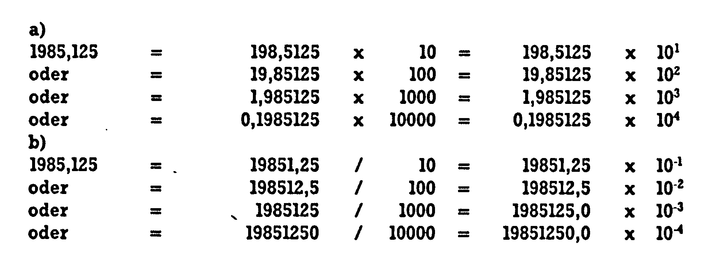
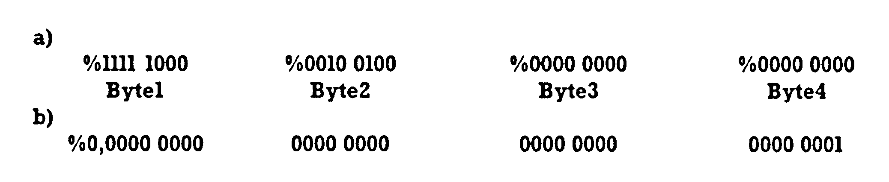
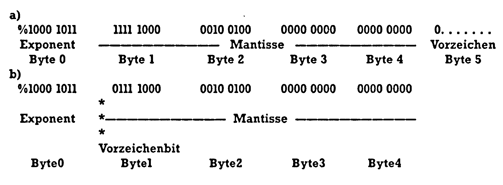
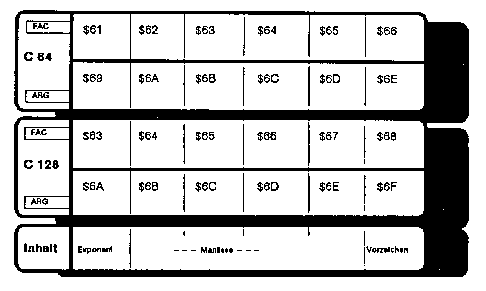
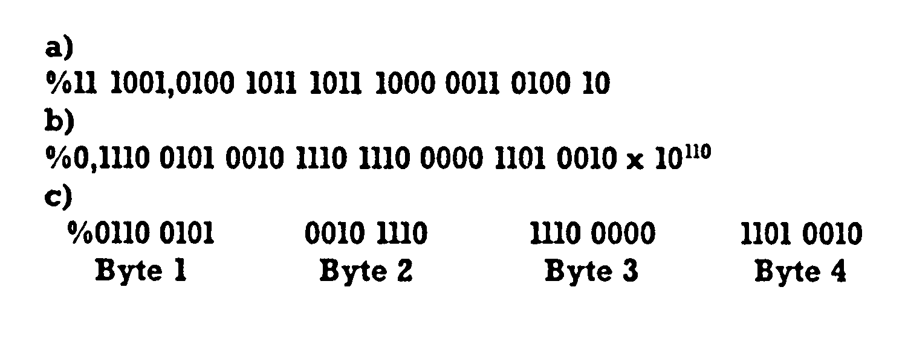

Von Basic zu Assembler (Teil 10)
Manchmal ist ein Assemblerprogrammierer in der Situation, Konstanten in ein Programm eintragen zu müssen, die keine ganzen Zahlen sind. Lernen Sie die Fließkommazahlen kennen und die Formate, die unser Computer für diese Zahlen verwendet.
Erinnern Sie sich? In der 6. Folge dieses Kurses hatten wir allerlei seltsame Zahlensysteme zum Thema: Die Zahlen der Zweifingerlinge (profan die Binärzahlen genannt), die merkwürdigen Zahlen der Atvabarer (welche von den Computerbenutzern heute als Hexadezimalzahlen bezeichnet werden) und natürlich die uns geläufigen Dezimalzahlen (obwohl in denen auch noch allerlei Merkwürdigkeiten stecken — aber das ist ein anderes Thema). Wir waren aber so bequem, uns nur den ganzen Zahlen zu widmen, und wie Sie alle wissen, bilden die eher die Ausnahme als die Regel. Umgehen wir einfach all die mathematischen Feinheiten und nennen die anderen die »Kommazahlen«, dann wissen Sie, wovon nun die Rede sein wird.
Fließkommazahlen
Sehen wir uns das Ganze erst einmal im gewohnten System der Dezimalzahlen an. 2,71 Meter lang war der größte Mensch der Welt (Robert Pershing Wadlow, 1919-1940), dessen Maße medizinisch nachgeprüft wurden. 8,5 Einwohner leben im Staat Vanatuatu (Ozeanien) auf einem Quadratkilometer — in der Bundesrepublik sind es 245,5. Der Atomkern eines Heliumatoms wiegt etwa 0,000 000 000 000 000 000 000 000 006 643 kg. Füllt man dieses Gas in einen Luftballon, dann befinden sich (bei normalen Druck- und Temperaturverhältnissen) etwa 26 900 000 000 000 000 000 Heliumatome in einem Kubikzentimeter. Die beiden letzten Beispiele veranlassen meist zum mehrfachen Nachprüfen der vielen Nullen. Weil es solche unhandlichen Zahlenungetüme öfters gibt, hat man sich eine etwas bequemere Darstellung der Zahlen einfallen lassen. Man nennt das dann manchmal die »wissenschaftliche Darstellung« oder einfach »Fließkommadarstellung« (ab und zu ist auch von »Gleitkommadarstellung« die Rede). Was versteht man darunter, und wie baut man solche unhandlichen Zahlen wie die eben genannten in Fließkommazahlen um?
Dazu geht man von der Basis unseres Zahlensystems — nämlich der Zahl 10 — aus und ihren Potenzen, also 10, 10x10, 10x10x10 oder auch 1/10 und so fort. Die etwas unbequeme Schreibweise der Zehnerpotenzen kann durch die Verwendung von Hochzahlen vereinfacht werden:
| 10x10 | = | 100 | = | 102 |
| 10x10x10 | = | 1000 | = | 103 |
| 10 | = | 101 | ||
| 1/10 | = | 0,1 | = | 10-1 |
Jede Zahl kann als Produkt mit einer solchen Zehnerpotenz dargestellt werden, ja es gibt genau genommen unendlich viele Möglichkeiten der Schreibweisen als Produkte. Ein Beispiel soll das zeigen: Nehmen wir die Zahl 1985,125. Diese kann man — rechnen Sie nach — auch wie in Bild 1a schreiben. Auch anders herum ist das natürlich möglich, wie Sie in Bild 1b sehen können. Alle dort in der letzten Spalte gezeigten Zahlen sind Fließkommadarstellungen derselben Zahl 1985,125. Vielleicht erkennen Sie nun auch, weshalb »Fließkomma«: Das Komma hat keinen festen Platz mehr. In Abhängigkeit von der Zehnerpotenz wechselt es seinen Ort. Als Faustregel kann man sich merken:

Jede Verschiebung des Kommas um eine Stelle nach links führt zur Erhöhung der Hochzahl um 1, jede Kommaverschiebung nach rechts aber zu einer Erniedrigung der Hochzahl um 1.
Wozu das Ganze? Entscheiden Sie selbst an den beiden vorhin genannten Zahlenungetümen: 6,643x10-27 kg wiegt der Heliumatomkern und in einem Kubikzentimeter dieses Gases befinden sich 2,69x1019 Atome. Man kann jede Zahl in einem festen und überschaubaren Format darstellen. Wo aber ist das entscheidender als im Speicher unseres Computers?
Die Zweifingerlinge und Fließkommazahlen
Für alles nun folgende sollten Sie die Binärzahlen, ihren Aufbau und die Umrechnungsmethoden schon kennengelernt haben. Falls Sie sich das nicht mehr zutrauen, dann lesen Sie bitte noch einmal die Folge 6 dieses Kurses (Ausgabe 9/86, Seite 137) nach. Dies gilt besonders für den nächsten Abschnitt. Dieser hier kann recht kurz bleiben, denn natürlich ist es uns klar, daß auch die Zweifingerlinge nicht immer nur mit ganzen Zahlen zu tun haben. Außerdem treten bei ihnen noch viel eher als bei uns lange Zahlenungetüme auf, die durch eine Fließkommadarstellung lesbar gemacht werden müssen. Erinnern Sie sich: Die Zahl »4« beispielsweise benötigt in unserem Dezimalsystem nur eine Ziffer, im Binärsystem aber schon drei, nämlich %100 (Übrigens werde ich im folgenden immer den Vorsatz »%« verwenden, wenn die dahinter stehende Zahl eine Binärzahl sein soll).
Wenn sich also im Land der Zweifingerlinge 4 Personen (%100) eine Sachertorte teilen müssen, dann erhält jeder von ihnen %1/100 davon (als Bruch dargestellt) oder %0,01 (als Kommazahl dargestellt, also 0,25). Wieso %0,01? Es gibt im Prinzip zwei Wege der Erklärung. Sehen wir uns kurz den unbequemen Weg an, um nachher ausführlich den leichteren und breiter anwendbaren zu wählen.
Die Basis des Binärsystems ist ja die Zahl »2« (das ist %10). Denken Sie an die vorhin erwähnte Methode der Fließkommazahlen, dann sehen Sie sofort (naja, oder jedenfalls bald), daß:
| %0,01 | = | %0,1x10-1 |
| oder | = | %1x10-10 ist. |
In Dezimalzahlen ausgedrückt ist %1x10-10 aber gleich 1x2-2, was dasselbe ist wie 1/(22), also ¼ oder 0,25. Aber nun schnell zum leichteren Weg!
Wir werden uns zu dieser Umrechnung aus dem dezimalen System in das der Zweifingerlinge zunächst einmal wieder unser Beispiel 1985,125 vornehmen und daran Schritt für Schritt erkennen, wie man vorgeht.
Dazu trennen wir den Umrechnungsvorgang in zwei Teile auf: Der Vorkomma-Anteil (also 1985) wird nämlich anders umgerechnet als der Nachkomma-Anteil (also 125). Wie das mit dem Teil vor dem Komma zu geschehen hat, ist in der Folge 6 dieser Serie schon erklärt worden: Wir teilen die Zahl durch 2, notieren den Rest, teilen das Ergebnis wieder durch 2, notieren den Rest und so fort, bis wir irgendwann auf das Ergebnis 0 stoßen. Die gemerkten Reste aber bilden dann die gesuchte Binärzahl. Damit Sie nicht immer wieder in den alten Ausgaben blättern müssen (obwohl das manchmal zu ungeahnten Erkenntnissen führt, zum Beispiel neulich... Aber das gehört nicht hierher!) soll Ihnen das hier noch mal kurz gezeigt werden:
| 1985 | : | 2 | = | 992 | Rest 1 |
| 992 | : | 2 | = | 496 | Rest 0 |
| 496 | : | 2 | = | 248 | Rest 0 |
| 248 | : | 2 | = | 124 | Rest 0 |
| 124 | : | 2 | = | 62 | Rest 0 |
| 62 | : | 2 | = | 31 | Rest 0 |
| 31 | : | 2 | = | 15 | Rest 1 |
| 15 | : | 2 | = | 7 | Rest 1 |
| 7 | : | 2 | = | 3 | Rest 1 |
| 3 | : | 2 | = | 1 | Rest 1 |
| 1 | : | 2 | = | 0 | Rest 1 |
Von unten nach oben gelesen ergeben die Reste dann %111 1100 0001.
Übrig bleibt also der Nachkomma-Anteil, beziehungsweise die Zahl 0,125. Anstelle der Kettendivision durch 2 verwendet man hier nun die Kettenmultiplikation. Die umzuwandelnde Zahl wird mit 2 malgenommen, ein sich ergebender Vorkomma-Anteil notiert, dann die Nachkommastellen des Ergebnisses wieder mal 2 genommen, wieder Vorkomma-Anteil notiert und so fort. Das geschieht so lange, bis der Nachkomma-Anteil des Ergebnisses gleich 0 geworden ist. Sehen wir uns das an einigen Beispielen an. Wir stellen uns die Aufgabe, die Dezimalzahl 0,1 in ihr Zweifingerling-Entsprechendes umzuwandeln:
| 0,1 | x 2 | = | 0,2 | Vorkommast. 0 |
| 0,2 | x 2 | = | 0,4 | Vorkommast. 0 |
| 0,4 | x 2 | = | 0,8 | Vorkommast. 0 |
| 0,8 | x 2 | = | 1,6 | Vorkommast. 1 |
Weiterrechnen ohne die neue Vorkommastelle:
| 0,6 | x 2 | = | 1,2 | Vorkommast. 1 |
Noch mal weiter ohne neue Vorkommastelle:
| 0,2 | x 2 | = | 0,4 | Vorkommast. 0 |
| 0,4 | x 2 | = | 0,8 | Vorkommast. 0 |
Wenn Sie möchten, dürfen Sie daran weiterüben. Zu einem Ende werden Sie bei dieser Zahl nie gelangen, denn manchmal ergibt sich aus einem endlichen Dezimalbruch ein unendlicher (hier periodischer) Binärbruch. In der Reihenfolge der auftretenden Vorkommastellen angeordnet, erhält man die Nachkommastellen der Binärzahl, im Beispiel also:
%0,000 1100 1100 1100 . . .
Erinnern Sie sich noch an den 0,25-Anteil der Sachertorte? Dies als weiteres Übungsstück:
| 0,25 | x 2 | = | 0,5 | Vorkommast. 0 |
| 0,5 | x 2 | = | 1,0 | Vorkommast. 1 |
Der Nachkomma-Anteil ist 0 geworden und daher die Umrechnung beendet.
Als Ergebnis erhalten wir somit %0,01, was zu erwarten war. Nun können wir auch unser Beispiel 1985,125 weiter umrechnen:
| 0,125 | x 2 | = | 0,25 | Vorkommast. 0 |
| 0,25 | x 2 | = | 0,5 | Vorkommast. 0 |
| 0,5 | x 2 | = | 1,0 | Vorkommast. 1 |
Auch hier ist nun der Nachkomma-Anteil 0 geworden, die Rechnung daher beendet und das Ergebnis lautet %0,001. Jetzt können wir beide Ergebnisse kombinieren zur kompletten Kommazahl der Zweifingerlinge:
1985,125 entspricht
%111 1100 0001,001
Fließkommazahlen im Computer
Fassen wir das Ganze noch mal kurz zusammen: Eine dezimale Fließkommazahl wird in ihr binäres Pendant umgerechnet durch Trennen des Vor- und des Nachkomma-Anteils. Der Vorkomma-Anteil wird dann durch Kettendivision, der Nachkomma-Anteil durch Kettenmultiplikation in die Binärzahl umgerechnet und beide wieder kombiniert zur Gesamtzahl.
Wie Sie wissen, ist der Computer ja in Wirklichkeit ein Gerät aus der Welt der Zweifingerlinge. Kommazahlen kennt er also auch nur als Binärzahlen. Außerdem hatten wir vorhin festgestellt, daß es dem Computer besser liegt, die Kommazahlen als Fließkommazahlen zu speichern, weil da das Format so schön einheitlich ist. Als Assembler-Programmierer ist man manchmal in der Verlegenheit, Fließkomma-Konstanten in einer Tabelle zur späteren Verwendung durch ein Programm abzulegen. Einige Beispiele konnten Sie in den letzten Folgen im Rahmen des Beispielprogrammes 3 finden, welches dem Basic mathematische Routinen hinzugefügt hat, die manche Anwender schmerzlich vermissen (es dreht sich um LOGFAK, BOGFAK und GRDFAK im Tabellenmodul ab Zeile 4010). Wie erwartet der Computer solche Werte und wie kann man sie in die gewünschte Form bringen? An zwei Beispielen werden wir uns das nun ansehen: Als erstes arbeiten wir mit der Zahl 1985,125 weiter (die haben wir ja nun schon ziemlich weit umgerechnet), danach vollziehen wir den ganzen Weg einmal am Beispiel von GRDFAK.
Normalisieren
Der Computer bewahrt also Kommazahlen als binäre Fließkommawerte auf. Genauso, wie wir vorhin im Dezimalsystem an unserem Beispiel 1985,125 das Komma verschoben und damit die Hochzahl verändert haben, geschieht das jetzt im nächsten Prozeß, dem sogenannten »Normalisieren«. Darunter versteht man eine Verschiebung des Kommas so weit nach links (oder bei anderen Zahlen nach rechts), bis vor dem Komma nur noch eine Null steht, dahinter dann die erste von Null verschiedene Ziffer. Bei 1985,125 im Dezimalsystem führt das dann zu:
0,1985125 x 104.
Wir haben das Komma um 4 Stellen nach links geschoben, der Exponent (das ist ein anderer Name für »Hochzahl«) ist daher von 0 auf 4 angewachsen. Sehen wir uns nun das gleiche bei den Zweifingerlingen an. Aus
%111 1100 0001,001
wird dann:
%0,1111 1000 0010 01 x 101011
Bitte denken Sie daran, daß in diesem Fall %10 gemeint ist, also dezimal 2. Der Binärwert %1011 entspricht der Dezimalzahl 11 und um genau diese Anzahl Stellen ist das Komma nach links gewandert.
Der Exponent
Unsere Zahl ist nun eindeutig festgelegt durch die sogenannte Mantisse (worunter man die Zahl versteht, die zwischen dem Komma und dem »x«-Zeichen steht) und den Exponenten (solange die Basis unverändert %10 bleibt). Der Computer muß nun also zwei Größen festhalten (Mantisse und Exponent).
Bis hierher galt das Gesagte unabhängig von jedem Computertyp. Jetzt aber unterscheiden sich die weiteren Vorgehensweisen — und zwar abhängig von der jeweiligen Interpreterstruktur. In allen mir bekannten 8-Bit-Commodore-Computern und einigen anderen, deren Interpreter auf der Microsoft-Basis arbeiten, wird aber ebenso verfahren, wie es hier nun erklärt wird.
Zur Speicherung des Exponenten ist ein Byte vorgesehen. Nun kann aber dieser Exponent (wie in unserem Beispiel) positiv oder auch negativ sein. Hier könnte man nun von der Praxis Gebrauch machen, das Bit 7 dieses Exponentenbytes als Vorzeichenbit zu verwenden (so geschieht das im Fall der Speicherung von Integers). Hier aber verwendet man noch ein anderes Verfahren. Zum Exponenten wird die Zahl 128 addiert! Das führt dann bei positiven Exponenten zu Werten, die größer als 128, bei negativen zu solchen, die kleiner als 128 sind.
So kann man auch leicht ermitteln, welches denn die größte und die kleinste Fließkommazahl sein kann, die unser Computer verarbeitet. Die Summe 128 + Exponent darf nicht größer als 255 werden (das ist ja die größte in einem Byte speicherbare Zahl). Also kann der Exponent maximal 127 betragen. 2127 aber entspricht 1,7014118 x 1038. Anders herum: Kleiner als 0 kann das Exponenten-Byte nicht werden —128 ist daher der kleinste mögliche Exponent und 2-128 entspricht der Zahl
2,9387358 x 10-39.
Kommen wir nun wieder zu unserem Beispiel 1985,125. Die Addition des berechneten Exponenten %1011 mit 128 (das ist %1000 000) ergibt den Inhalt des Exponenten-Bytes:
%1000 1011
Rechnen wir diesen Wert noch ins Dezimalsystem um, dann ergibt sich die Zahl 139 und im Hexadezimalsystem haben wir $8B.
Die Mantisse
Weil der Computer immer mit Binärzahlen arbeitet, die Basis 2 also vorausgesetzt wird, fehlt uns nun zur eindeutigen Festlegung der Fließkommazahl nur noch die Mantisse. Diese wird in 4 Byte gespeichert, und zwar linksbündig. Falls nur ein Teil der 4 Byte für die Ziffern benötigt wird, füllt unser Computer den Rest mit Nullen auf. In Bild 2a sehen Sie die Mantisse der Zahl 1985,125. In Dezimalzahlen entspricht das der Zahlenfolge 248, 36, 0, 0 und in Hexadezimalzahlen der Reihe $F8, $24, $00, $00.

Wie genau ist eigentlich unsere Fließkommadarstellung? Schon bei der Umrechnung der Dezimalzahl 0,1 ins System der Zweifingerlinge haben Sie bemerkt, daß wir auf unendlich viele Stellen weiterrechnen können, ohne den genauen Wert zu erhalten. Aber auch andere Dezimalzahlen füllen nach der Umrechnung manchmal mehr als nur die 4 Byte der Mantisse. Zweifellos sind die ersten 32 Bit der Mantisse die am meisten signifikanten. Ein Beispiel aus dem gewohnten Dezimalsystem soll das zeigen: Es ist ein großer Unterschied zwischen den Zahlen 0,1 und 0,9, ein kleiner aber nur zwischen 0,1000000001 und 0,1000000009. Immerhin, manchmal zählt auch dieser kleine Unterschied! Alle Bits ab Bit 32 (die also nicht mehr in die 4 Byte passen) fallen unter den Tisch. Der kleinste Unterschied zwischen zwei Zahlen, der in diesen vier Mantissen-Byte festgehalten werden kann, beträgt 2-32 oder in dezimal 0,000 000 000 2 (die binäre Schreibweise sehen Sie in Bild 2b). Daraus folgt, daß man beispielsweise die Zahlen
1,000 000 000 2
und 1,000 000 000 0
darstellen kann, nicht aber
1,000 000 000 1
In der 10. Stelle rechnet unser Computer wegen seiner Mantissendarstellung in 4 Byte also ungenau, und je komplexer eine Rechnung wird, desto mehr breiten sich diese Ungenauigkeiten in die 9. oder sogar 8. Stelle aus. Das nennt man dann den Rundungsfehler.
Die Formate: FLPT und MFLPT
Eigentlich wäre jetzt schon alles geklärt, wenn wir nicht den Umstand vergessen hätten, daß auch die Mantisse ein Vorzeichen hat. Bisher konnten wir beispielsweise eine Zahl -1985,125 noch nicht darstellen. Auch dieses Problem ist natürlich gelöst, und zwar gleich auf zweierlei Weise. Es gibt nämlich zwei Formate, in denen Fließkommazahlen in unserem Computer stehen.
Das einfachere davon nennt man FLPT-Format (das kommt von »FLoating-PoinT«, was »Fließpunkt« bedeutet). Das Vorzeichen der Mantisse wird hier einfach in einem eigenen Byte gelagert. Das Bit 7 dieses Bytes ist 0, wenn wir eine positive, oder 1, wenn wir eine negative Zahl vor uns haben. Die restlichen 7 Bit (also Bit 6 bis 0) dieses Vorzeichenbytes sind unbenutzt. Sehen wir uns nun in Bild 3a unser Beispiel 1985,125 im kompletten FLPT-Format an. Diese Lagerung und Verarbeitung einer Fließkommazahl in 6 Byte findet vor allem an zwei markanten Orten unseres Computers statt: Dem FAC und dem ARG. Beides sind sogenannte Fließkomma-Akkumulatoren, von denen der FAC (»Floating point ACcumulator«) für Fließkommazahlen etwa die Rolle des Akku spielt, also gewissermaßen die Rechenzentrale darstellt. Eine große Anzahl von Interpreterfunktionen erfordert das Argument im FAC und liefert das Ergebnis dorthin. Die USR-Funktion des Basic packt das Argument ebenfalls in den FAC, was eine bequeme Übergabemöglichkeit von Fließkommawerten an ein Maschinenprogramm darstellt. Dazu werden wir ein anderes Mal noch kommen.

Viele Interpreterfunktionen erfordern zwei Argumente. Eines davon liegt dann im FAC, das zweite im ARG (von »ARGument«, manchmal auch FAC2 genannt). Bild 4 zeigt Ihnen den Aufbau und den Ort des FAC und des ARG im C 64 und im C 128.

Fließkommazahlen werden aber nicht nur an diesen zwei Orten des Computers verwendet, meist müssen sie irgendwo im RAM ihr Dasein fristen als Variable, als Array-Elemente und so weiter. Da wäre es schon eine Speicherverschwendung, jedesmal 6 Byte für solche Werte zu reservieren, von denen eines nur für das Vorzeichen (als Bit 7) benötigt wird! Aus diesem Grund existiert noch ein gepacktes Format, das man MFLPT-Format nennt (das kommt von »Memory FLoating PoinT«). Hier findet die Fließkommadarstellung in nur 5 Byte statt. Wie kann man das erreichen, wo doch schon der Exponent und die Mantisse volle 5 Byte erfordern?
Ein Bit braucht man nur für das Vorzeichen. Gibt es in diesen 5 Byte ein überflüssiges Bit, das man dazu verwenden kann? Es gibt! Denken Sie an den Vorgang des Normalisierens, wo die Verschiebung des Kommas so weit gefordert wurde, daß vor dem Komma eine 0, danach aber die erste signifikante Ziffer steht. Im Binärsystem gibt es aber für diese erste Stelle nach dem Komma nur eine Möglichkeit: Es muß sich um die Ziffer 1 handeln! Wenn das aber ohnehin klar ist, dann kann man auf dieses erste Mantissen-Bit auch verzichten. Behält man einfach immer im Sinn, daß dort auf alle Fälle noch eine 1 hingehört, dann kann man nun mit diesem Bit anstellen, was man möchte: Beispielsweise es als Vorzeichenbit verwenden. Genau das geschieht, und deshalb finden Sie im Bit 7 des ersten Mantissen-Bytes immer eine 0, wenn wir eine positive Zahl, aber eine 1, wenn wir eine negative Zahl vor uns haben. In Bild 3b sehen Sie unser Beispiel 1985,125 im MFLPT-Format. Hier ergibt sich also die dezimale Zahlenfolge 139, 120, 36, 0, 0 oder im Hexadezimalsystem: $8B, $78, $24, $00, $00.
Eine komplette Umrechnung
Nun werden wir am Beispiel von GRDFAK die komplette Berechnung durchführen:
GRDFAK = 180/π = 180/3,141592... = 57,2957795...
a) Vorkomma-Anteil umrechnen:
| 57:2 | = | 28 | Rest 1 |
| 28:2 | = | 14 | Rest 0 |
| 14:2 | = | 7 | Rest 0 |
| 7:2 | = | 3 | Rest 1 |
| 3:2 | = | 1 | Rest 1 |
| 1:2 | = | 0 | Rest 1 |
Damit folgt für den Vorkomma-Anteil: %111001
b) Nachkomma-Anteil umrechnen:
0,2957795 x 2 = 0,591559 Vorkommaziffer 0
0,591559 x 2 = 1,183118 Vorkommaziffer 1
0,183118 x 2 = 0,366236 Vorkommaziffer 0
Rechnen Sie weiter, bis Sie mit dem eben ermittelten Vorkommateil 32 Stellen ermittelt haben. Sie erhalten dann die Kommazahl in Bild 5a.

c) Normalisieren: Bild 5b
d) Exponent:
Addieren von 128 ergibt nun für das Exponentenbyte:
%0110 oder dezimal 134 oder $86.
e) Mantisse:
Wir brauchen den Wert GRDFAK im MFLPT-Format und lassen (er ist ja positiv) das erste Mantissen-Bit daher zu 0 werden. Das Resultat sehen Sie in Bild 5c. Es entspricht der dezimalen Zahlenfolge 101, 46, 224, 210 und der hexadezimalen Folge $65, $2E, $E0, $D2.
f) Eintrag:
Insgesamt haben wir nun für GRDFAK in unseren Quelltext die Zahlenfolge $86, $65, $2E, $E0, $D2 einzuschreiben. Das wär's dann!
Ganz schön viel Arbeit, werden Sie sagen. Stimmt! Es ist natürlich unumgänglich, die Grundlagen zu kennen, aber Sie verfügen schließlich über einen Computer, der sich für solche Aufgaben besonders gut eignet.
Speziell bei einer häufigen Anwendung dieser Methode ist es wesentlich bequemer, die ganze Prozedur nicht immer selbst durchführen zu müssen. Sie sollten deshalb einmal versuchen, Ihrem Computer die Arbeit zu überlassen. In der nächsten Folge unseres Kurses finden Sie eine mögliche Programmlösung dazu — für den C 64 und den C 128.
(Heimo Ponnath/pd)